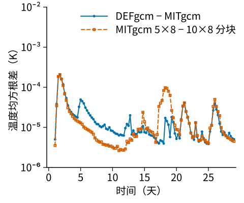
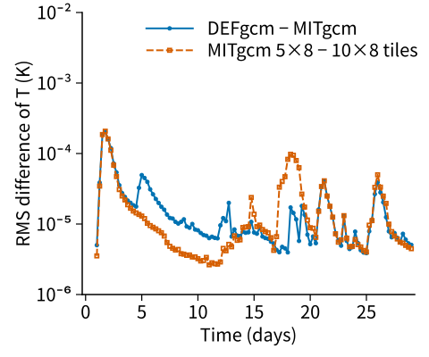

2026 年 3 月起独立开发Sole developer since March 2026
DEFgcm可微、与 MITgcm 等价、快速的海洋环流模式Differentiable, equivalent to MITgcm, and fast
DEFgcm 用 PyTorch 实现 MITgcm 的海洋离散方案，由同一个程序计算模式积分及其梯度。在南海，它的积分与 MITgcm 一致：按 29 天合并计算，两者的温度均方根差为 3.6×10⁻⁵ K，只改变求和顺序的两次 MITgcm 运行之间为 4.0×10⁻⁵ K。这些梯度用于四维变分同化，也用于经模式在线训练神经网络，包括嵌在时间步内部的网络。
DEFgcm implements the ocean discretizations of MITgcm in PyTorch so that one program computes integrations and their gradients. Over the South China Sea, its integrations match MITgcm's: pooled over 29 days, the RMS temperature difference between the two is 3.6×10⁻⁵ K, against 4.0×10⁻⁵ K between two MITgcm runs that differ only in summation order. The gradients drive 4D-Var data assimilation and train neural networks online through the model, including networks inside each time step.


结构Architecture
DEFgcm 在一个 PyTorch 程序中实现 MITgcm 的离散方案，既计算模式轨迹，也计算代价函数对控制量（如初始场或网络参数）的梯度。模式求解静力和非静力 Boussinesq 方程，支持经纬度和立方球网格，含 KPP 垂向混合、隐式自由面和开边界。
DEFgcm implements the MITgcm discretizations in one PyTorch program that computes a model trajectory and the gradient of a cost function with respect to controls such as the initial state or network parameters. It solves the hydrostatic and nonhydrostatic Boussinesq equations on latitude–longitude or cubed-sphere grids, with KPP vertical mixing, an implicit free surface and open boundaries.
一个时间步分五个阶段，共有三处隐式求解，反向计算通过解转置方程组对它们求导。同化窗口的梯度按段计算，每段只保存起始状态，超出显存预算的存到主机内存，反向时逐段重算、求导并释放。
A time step has five stages and three implicit solves, which the reverse pass differentiates through the transposed systems. The gradient of an assimilation window is computed segment by segment: only the first state of each segment is stored (in host memory beyond a GPU budget), and the reverse pass recomputes, differentiates and releases one segment at a time.
PyTorch 编译器把张量运算融合成 GPU kernel，垂向求解、状态方程、混合和平流用手写 CUDA kernel。水平区域分解把每个水柱留在一张 GPU 上，反向计算按同样的分解在多卡上进行，所以单卡放不下的网格也能求梯度。
The PyTorch compiler fuses the tensor operations into GPU kernels, and hand-written CUDA kernels implement the vertical solves, the equation of state, mixing and advection. Horizontal domain decomposition keeps each water column on one GPU and also applies to the reverse pass, so grids too large for one GPU can be differentiated.
性能Performance
在南海的 N×N×90 测速网格上，从 N=480 起，4 张 A800 GPU 的静力单步耗时都短于 MITgcm，是 MITgcm 最短耗时的 0.50 至 0.81 倍。在 960×960×90 网格上，MITgcm 用 768 个 Xeon Gold 6132 核时每步 126 毫秒，4 张 GPU 每步 77 毫秒，速度是 MITgcm 的 1.6 倍。非静力配置下，MITgcm 用 640 个核时每步 822 毫秒，4 张 GPU 每步 232 毫秒，速度是 MITgcm 的 3.5 倍。
On the N×N×90 benchmark grids of the South China Sea, four A800 GPUs take less time per hydrostatic step than MITgcm on every grid from N=480 on, 0.50 to 0.81 times the fastest MITgcm time. On the 960×960×90 grid, four GPUs take 77 ms per step, 1.6 times as fast as MITgcm at 126 ms on 768 Xeon Gold 6132 cores. In the nonhydrostatic configuration, four GPUs take 232 ms per step, 3.5 times as fast as MITgcm at 822 ms on 640 cores.
从 N=960 起，GPU 数量每增加一倍，速度提高为原来的 1.8 至 1.9 倍。4 张 GPU 能积分大到 2400×2400×90 的网格。计算一次代价函数及其梯度，耗时是同样步数正向积分的 2.9 至 5.3 倍。
From N=960 on, each doubling of the GPUs makes a step 1.8 to 1.9 times faster, and four GPUs hold grids up to 2400×2400×90. One evaluation of a cost function and its gradient takes 2.9 to 5.3 times as long as a forward integration of the same steps.
四维变分同化4D-Var data assimilation
在南海孪生试验中，MITgcm 从 GLORYS 再分析起算得到真值，从 HYCOM 分析起算得到背景（同化前的初始状态）。DEFgcm 在 160×152×41 网格（含 KPP 和开边界）上同化从真值抽样并加噪声的海面高度、海表温度和温盐剖面，同化窗口 3 天，共 79 个窗口。
In South China Sea twin experiments, MITgcm produces the truth from the GLORYS reanalysis and the background (the initial state before assimilation) from the HYCOM analysis. DEFgcm assimilates sea surface height (SSH), sea surface temperature (SST) and temperature and salinity profiles sampled from the truth with noise, on a 160×152×41 grid with KPP and open boundaries, in 79 three-day windows.
窗口结束后第 3 天，预报误差 Q（温盐、流速和海面高度的归一化均方误差）的平均值由背景预报的 0.858 降到 4D-Var 预报的 0.505。逐个窗口计算降幅，平均为 40%，范围为 20% 至 57%。降幅来自 4D-Var 对初始场的修正（分析增量），修正量与真值减背景的相关系数中位数，海表温度为 0.85，温度为 0.67。
Three days after the window, the average forecast error Q (normalized mean-square error of temperature, salinity, velocity and SSH) falls from 0.858 for the background to 0.505 for 4D-Var. The reduction per window averages 40% and ranges from 20% to 57%. It comes from the 4D-Var increment to the initial state, which correlates with truth minus background with median coefficients of 0.85 for SST and 0.67 for temperature.
混合建模：经模式在线训练网络Hybrid modeling: training networks online through the model
一个神经网络读入窗口内的观测新息（观测相对背景轨迹的偏差）、背景状态和代价函数在背景处的梯度，输出初始场。在线训练以该窗口的 4D-Var 代价函数为损失，梯度经 DEFgcm 的反向积分传到网络参数，因此不需要用分析场作标签。训练好后，每个窗口只需算一次代价函数及其梯度，不再做极小化。
A network produces the initial state of a window from the innovations (observations minus the background trajectory), the background state and the cost-function gradient at the background. Online training uses the window's 4D-Var cost function as the loss, and the reverse integration of DEFgcm carries its gradient to the network parameters, so no analyses are needed as labels. Once trained, the network needs one evaluation of the cost function and its gradient per window instead of a minimization.
在训练期之后的 13 个测试窗口上，4D-Var 把窗口结束后第 3 天的平均 Q 从 1.019 降到 0.525，网络补上了这一差距的 81%，逐窗为 72% 至 93%。同样只算一次梯度，沿负梯度按拟合的步长走一步只补上 44%。
On the 13 test windows after the training period, 4D-Var lowers the average Q three days after the window from 1.019 to 0.525, and the network closes 81% of this gap, 72% to 93% in individual windows. A scaled gradient step, also from one evaluation, closes 44%.
4D-Var 要约 11 次 J 与梯度求值才达到网络的误差，网络只用 1 次。
4D-Var needs about 11 evaluations of J and its gradient to reach the error of the network, which needs only one.
同一反向积分也能对嵌在时间步内部的网络求导。例如一个有 1282 个权重的多层感知机，每步在每个格点上给动量方程加一项，权重梯度与中心差分的相对差为 1×10⁻⁶ 至 2×10⁻⁶，加入网络后一次梯度计算只多用 8% 的时间。
The same reverse integration differentiates networks inside the time step. For a 1,282-weight multilayer perceptron that adds a momentum tendency at every grid point and step, the weight gradients agree with central differences to a relative 1×10⁻⁶ to 2×10⁻⁶, and the network adds 8% to the time of a gradient evaluation.
| 分析场Analysis | 第 3 天 QQ at 3 d | 补上的差距Gap closed | J/m |
|---|---|---|---|
| 背景Background | 1.019 | 0% | 24.85 |
| 4D-Var，最多 30 次迭代4D-Var, up to 30 iterations | 0.525 | 100% | 0.76 |
| 在线训练的网络Network trained online | 0.618 | 81% | 1.76 |
| 缩放梯度Scaled gradient | 0.804 | 44% | 7.59 |